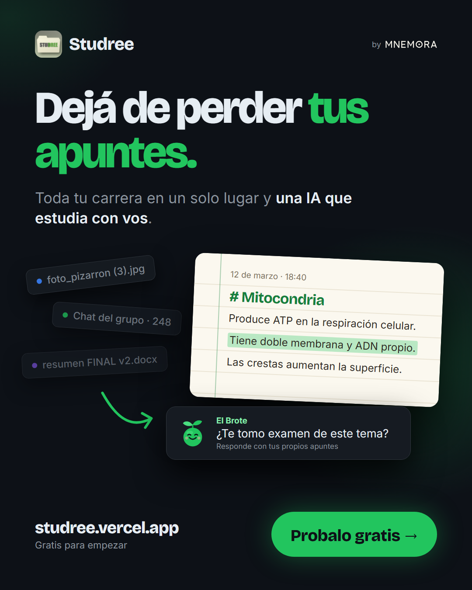

Proyecto final 2026
Studree
El conocimiento no se guarda. Crece.
Un producto de Mnemora
Técnico en Informática Profesional y Personal · Instituto Parroquial El Obraje
¿Cuándo fue la última vez que perdiste un apunte?
de los estudiantes dice que nunca pierde información.
El resto anota en libretas, notas sueltas, carpetas y Word.
Anotar no es el problema: perder lo anotado sí.
Encuesta de validación a estudiantes · 24 respuestas · Mnemora 2026
Study + Tree
Tus apuntes + una IA que los conoce.
- 01Tus apuntes, ordenadosCarrera → Materia → Hoja, como una carpeta escolar.
- 02Una IA que conoce tu materiaEl Brote responde citando de qué hoja sacó cada dato.
- 03Herramientas para estudiarExámenes, resúmenes, tarjetas y plan de estudio.
12 de marzo · 18:40
# Mitocondria
Produce ATP en la respiración celular.
Tiene doble membrana y ADN propio.
Las crestas aumentan la superficie.
En vivo
Demo en vivo
studree.vercel.app ↗La app desplegada, con una cuenta de demo.
Lo que nos dijeron los estudiantes
dice que una app visual y simple le sería muy útil.
Encuesta de validación a estudiantes · 24 respuestas · puntajes 4 y 5 en una escala de 1 a 5
Quieren todo en un solo lugar. Visual y simple.
Perfil del cliente · CUPID
- CCompradorEstudiantes e instituciones que buscan ordenar su información.
- UUsuarioSecundarios, terciarios, universitarios y quienes hacen cursos.
- PPagadorEl estudiante (o su familia) y las instituciones educativas.
- IInfluenciadorDocentes, academias y creadores de contenido educativo.
- DDecisorLa persona o institución que elige la herramienta.
Matriz impacto · frecuencia
Usamos IA. Las decisiones fueron nuestras.
Método AInnovate: primero la documentación, después el código.
El bloqueo que resolvimos
Llegar a una hoja era tedioso, y el lienzo de nodos no servía para escribir.
La Carpeta: hojas seguidas, índice de temas y buscador. Migramos los datos sin perder ninguno.
React 18 · Vite · Supabase (Postgres, Auth, Storage) · Gemini en una Edge Function · TipTap · React Flow · PWA
Empezamos cerca. Crecemos desde ahí.
Fuentes: Síntesis de Información Estadísticas Universitarias 2022-2023 (Ministerio de Capital Humano) · Indicadores Provinciales de Ciencia y Tecnología, Ministerio de Ciencia y Tecnología de Córdoba (2023). Círculos fuera de escala.
Freemium
Gratis para empezar. Premium para rendir.
Gratis
$0
- Apuntes y tarjetasSin límite
- Chat con el Brote20 por día
- Resúmenes y exámenes3 por mes
- Plan de estudio—
Premium
ARS 4.999/mes
- Apuntes y tarjetasSin límite
- Chat con el Brote200 por día
- Resúmenes y exámenesSin tope
- Plan de estudioIncluido
clientes Premium cubren los costos.
$20.000 ÷ ($4.999 − $1.000) = 5,0 → 6
Difusión · componente en inglés

Empezá a hacer crecer tu árbol.
Studree · un producto de Mnemora